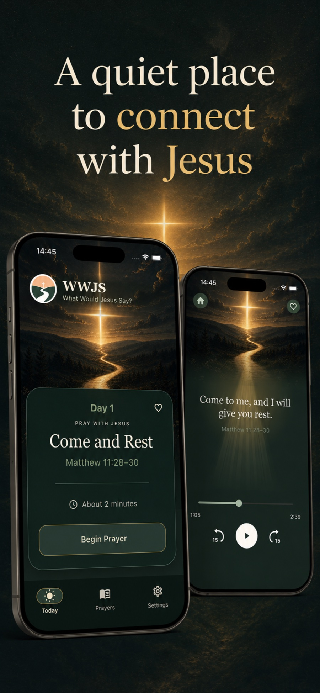
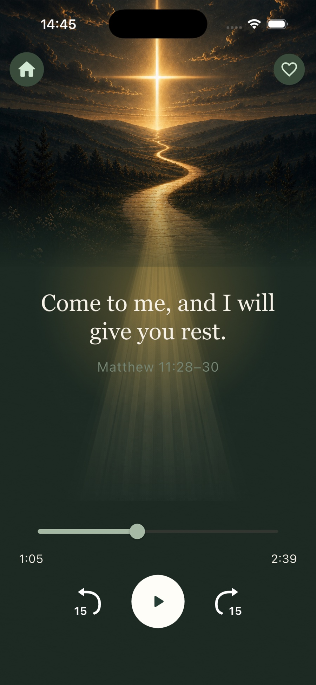

Be still
Pause, breathe, and become present.
HEAR SCRIPTURE. RESPOND IN PRAYER. PRAY WITH JESUS.
WWJS means What Would Jesus Say? It helps you slow down with Scripture, listen to a Scripture-grounded reflection in the voice of Jesus, and respond to him in peaceful guided prayer—one day at a time.
Come as you are. No account. No public streaks. No pressure.

Scripture
Reflection
Guided prayer
A SIMPLE DAILY RHYTHM
Open today’s prayer, listen to Scripture, reflect, and respond in prayer. In about two minutes, carry one hopeful truth into the rest of your day.
Pause, breathe, and become present.
Hear a Scripture-grounded reflection in the voice of Jesus.
Bring your needs, gratitude, and honest words to Him.

INSIDE WWJS
Open today’s prayer, listen at your own pace, and return to the prayers you want to keep close.
Move through Scripture, reflection, and prayer in about two minutes.
Play, pause, rewind, and continue whenever you’re ready.
Save favorites and revisit the prayers you want to keep close.
Choose a reminder that helps you return without pressure.
No account is required, and your prayer activity stays on your device.
RETURN EACH DAY
You don’t need perfect words or a long routine. Open WWJS, receive the day’s Scripture, and pray.
Begin with Day 1.